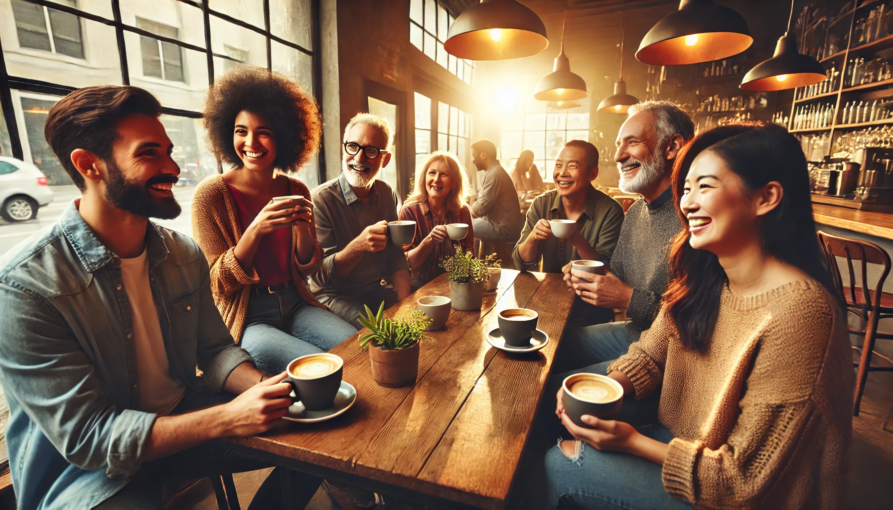
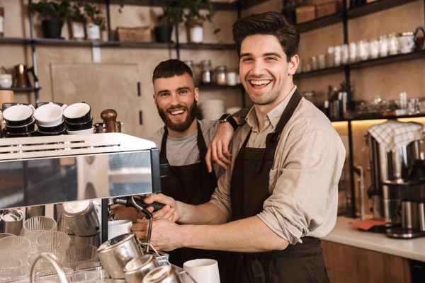

Welcome to Coffee & Cookie !
“Born from a passion for coffee and a dream to create a cozy space,' Coffee & Cookie ' is all about savoring life’s simple pleasures. From our carefully crafted coffees to our homemade cookies, we’re committed to bringing a taste of joy to every cup and plate we serve.”
Our story
"For over 30 years, ' Coffee & Cookie ' has been a cherished retreat for coffee lovers and dreamers alike. Founded with a passion for crafting the perfect brew, our family-owned cafe has seen generations gather, laugh, and unwind within its cozy walls. From our original hand-roasted beans to freshly baked treats, we blend tradition with innovation to serve an unforgettable experience. Step in, and be a part of a legacy that’s brewed with love and served with a smile."

Values and Quality
At Our cafe, we serve more than just coffee , we create an experience built on quality and care. From ethically sourced beans to freshly baked treats, every cup and bite reflects our commitment to sustainability, community, and the love of coffee. Join us in savoring the finest flavors, crafted with the planet in mind.
Customer Experience
At our cafe , we create a warm , welcoming atmosphere with friendly service and high-quality coffee and treats. Every visit is designed to ensure your satisfaction, making each sip and bite a memorable experience. Your comfort and enjoyment are our top priority.

Our Team Members
"At Coffee & Cookie, our team is more than just a group of employees; we're a family. From our talented baristas who perfect every cup of coffee to our chefs who craft the most delicious cookies, each member of our team plays a vital role in creating the experience we offer. We’re passionate about serving you, and we can't wait to share our love for coffee and treats with you!"

" Thank You for Being Part of Our Journey!
We are deeply grateful to each and every one of you who walks through our doors or enjoys our coffee from home. Your support means the world to us.
Thank you for making Coffee & Cookie your cafe of choice — we can’t wait to serve you again soon ! "